On the wrist
HeatWatch, current project
HeatWatch uses wearable sensors and machine learning to spot heat stress early and to alert people before it becomes heat illness. It is a current project with Dr. Shaikhah Alkhadhr at Kuwait University.
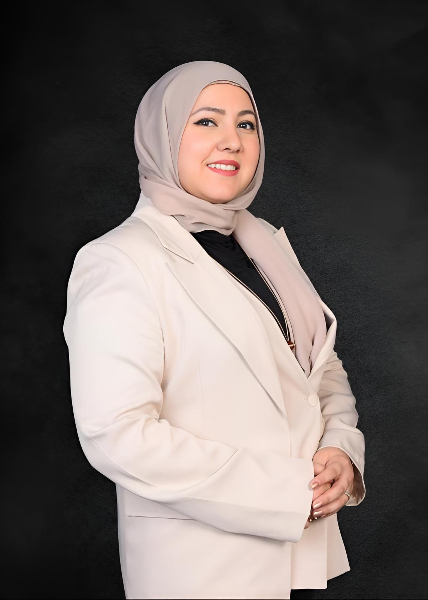
Assistant Professor of Information ScienceCollege of Life Sciences, Kuwait University
I put artificial intelligence to work inside real systems: on the wrist, on the road and across the city.
PhD in Computer Engineering from the University of California, Irvine. Co-lead of the CAIS Lab at Kuwait University. Invited speaker on AI and the law at Kuwait Lawyers Bar Society conferences.
Most of my work applies artificial intelligence inside Internet of Things systems, where sensors, small computers and machine learning work together.
HeatWatch, current project
HeatWatch uses wearable sensors and machine learning to spot heat stress early and to alert people before it becomes heat illness. It is a current project with Dr. Shaikhah Alkhadhr at Kuwait University.
AutoCoach, from my PhD
AutoCoach is a driver feedback agent. It models each driver's personality and tailors its feedback, with the aim of improving driving behavior and road safety. I developed it with Prof. Kwei-Jay Lin at UC Irvine, and it is described in papers in Electronics and at IEEE SOCA.
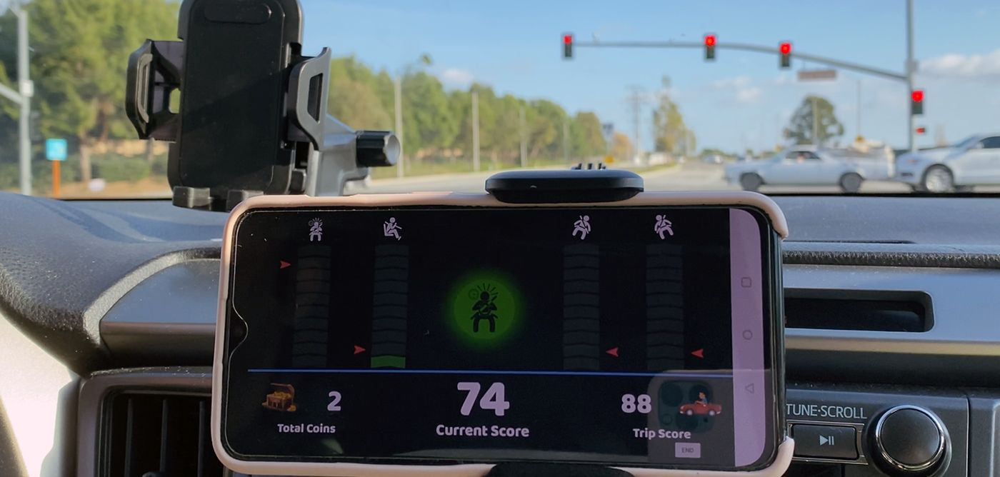
GreenScore
GreenScore is a sustainability assessment framework for IoT systems, part of my work on smart cities.
Next, I am extending this work into medical AI.
The traces on this page are illustrations, not measured data.
I am a Computing Professor and applied AI researcher specializing in the Internet of Things, intelligent systems, real-time computing, and the development of technology-driven solutions for real-world challenges.
My research focuses on translating emerging technologies into practical and impactful systems across digital health, smart environments, sustainability, mobility, and data-driven decision support. I am particularly interested in wearable sensing, edge intelligence, machine learning, personalized feedback systems, and the responsible use of AI in critical and socially relevant domains.
My current research includes wearable-based systems for monitoring heat-related health risks through real-time sensing and analytics, frameworks for evaluating the sustainability of IoT devices, and projects involving smart systems, health analytics, intelligent decision support, and real-time data processing.
I am also interested in the application of artificial intelligence and data analytics to real estate valuation and market decision-making, particularly within the context of the Kuwaiti property market.
My doctoral research at the University of California, Irvine, resulted in AutoCoach, an intelligent IoT system that analyzed driving behaviour and delivered personalized feedback to support safer driving.
Alongside my research, I am committed to mentoring students, supervising interdisciplinary projects, and building stronger connections between academia, industry, and entrepreneurship. I welcome research collaborations, industry partnerships, and innovation opportunities in applied AI, IoT, digital health, smart systems, sustainability, and intelligent data-driven platforms.
Education
Experience
Z. Marafie, S. Malallah, E.U. Osiobe, L. Shamir, J.L. Valenzuela, F.E. James
Conference2026 ASEE Annual Conference & Exposition
S. Malallah, E.U. Osiobe, Z. Marafie, P. Henriquez-Coronel, L. Shamir, E.L. Carlson, J.L. Weese
Conference2024 ASEE Annual Conference & Exposition
Z. Marafie, K.-J. Lin, D. Wang, H. Lyu, Y. Liu, Y. Meng, J. Ma
JournalElectronics, 10(11), 1361
ThesisPhD dissertation, University of California, Irvine
Z. Marafie, K.-J. Lin, D. Wang, H. Lyu, Y. Meng, T. Ito
ConferenceIEEE 12th Conference on Service-Oriented Computing and Applications (SOCA)
Z. Marafie, K.-J. Lin, Y. Zhai, J. Li
ConferenceIEEE 20th Conference on Business Informatics (CBI), vol. 2, pp. 72–81. Presented in Vienna, Austria
ThesisMSc thesis, University of California, Irvine
Invited talks and workshops
Panel speaker, CODED event, College of Life Sciences, Kuwait University.
Invited talk, The Future of Digital Justice Conference, Kuwait Lawyers Bar Society.
Invited talk, Third Kuwait Digital Transformation Conference.
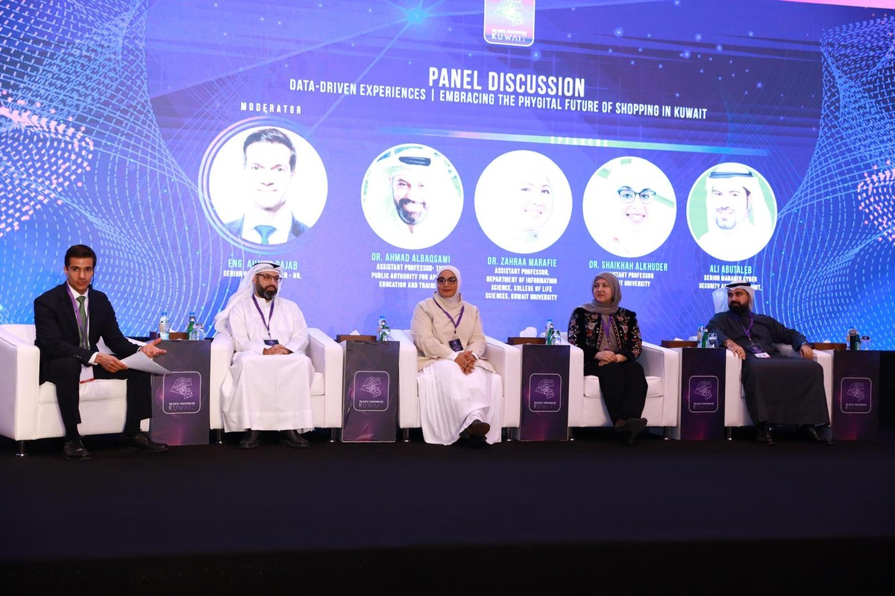
Workshop co-led with Dr. Shaikhah Alkhadhr, College of Science, Kuwait University.
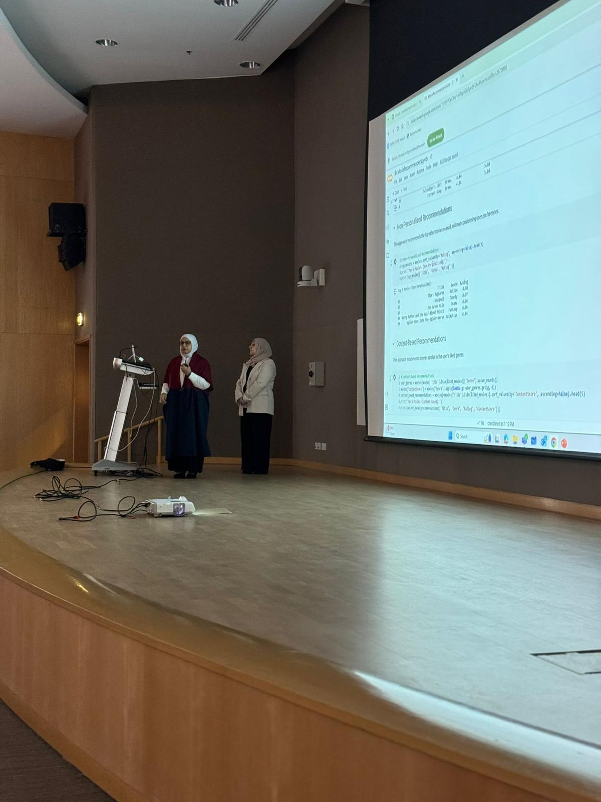
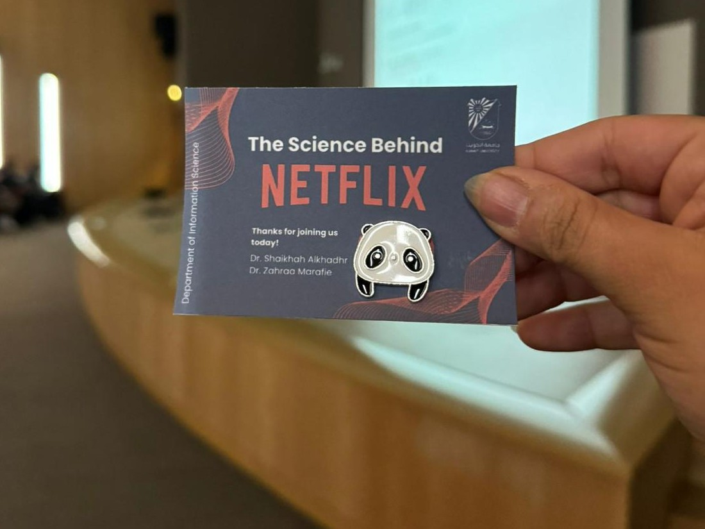
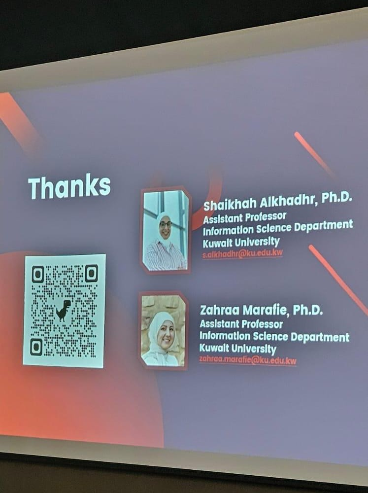
Invited talk, Artificial Intelligence Between Law and Technology conference, Kuwait Lawyers Bar Society.
Posters
Z. Marafie, S. Alkhadhr
PosterPoster Day, Scientific Research Conference 2024 to 2025, Kuwait University
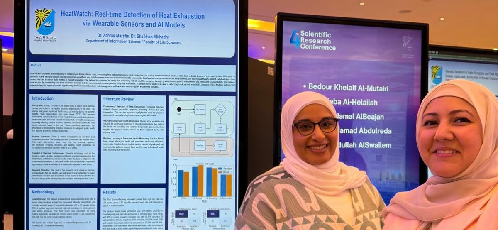
In the news
Reported on my session about data security in AI. I spoke about the challenges institutions face as they adopt AI, especially in healthcare and finance, and the decisive role lawyers play in legal compliance and in protecting the sensitive data these systems depend on.
Quoted at the Department of Information Science seminar led by wellness trainer Ahmed Al-Najjar. I spoke about how technology and social media widen access to knowledge and keep families in touch, while a constant stream of stories can affect quality of life.
Cybersecurity, AI, IoT and Simulations, in the Department of Information Science. I co-lead the lab with Dr. Shaikhah Alkhadhr.
I organize talks and community events, and support female students to lead workshops, give talks and start research projects in data science and AI.
Student hackathons, technical talks and coding competitions.
Workshops, seminars, competitions and outreach for students in computing and AI. See the full record.
Prof. Fadi Kurdahi and colleagues from the Samueli School of Engineering visited Kuwait University. I organized graduate program sessions and meetings with faculty that opened discussions on research collaboration and student exchange.
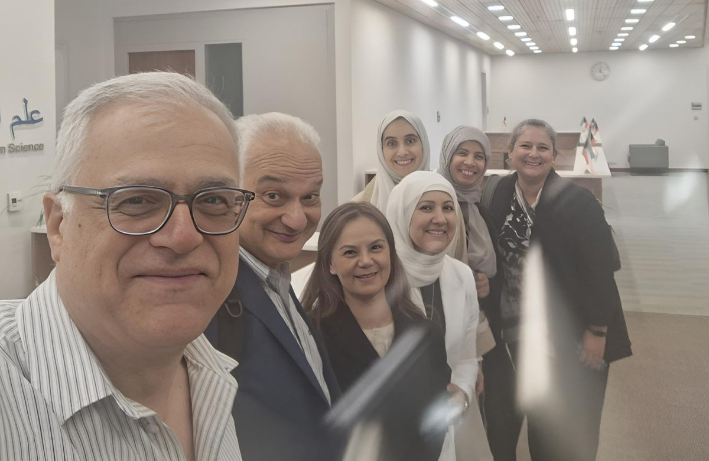
Forum on medical AI hosted by the Artificial Intelligence Research Center and the College of Intelligent Computing, Chang Gung University, Taiwan, 9 December 2024.
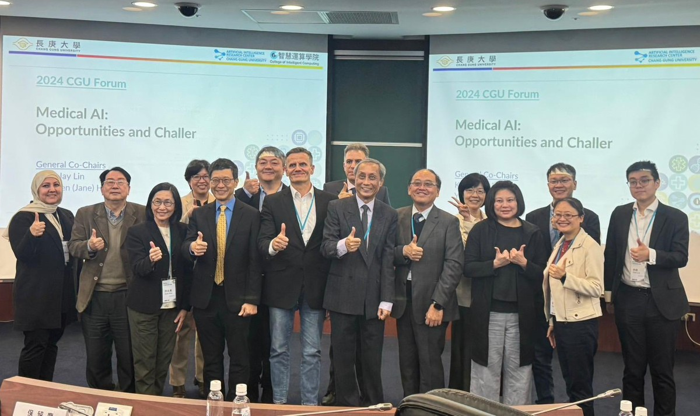
I coordinated his visit and led discussions on memoranda of understanding, student exchange, joint research and co-advising.
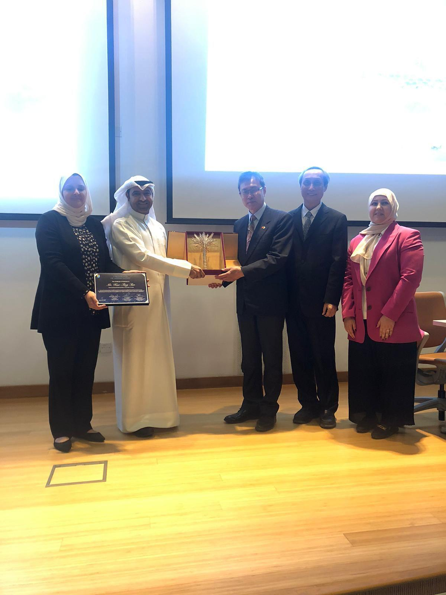
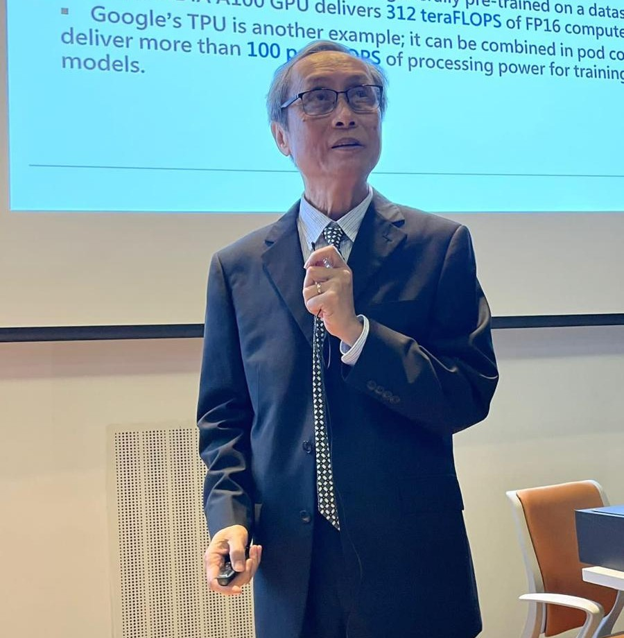
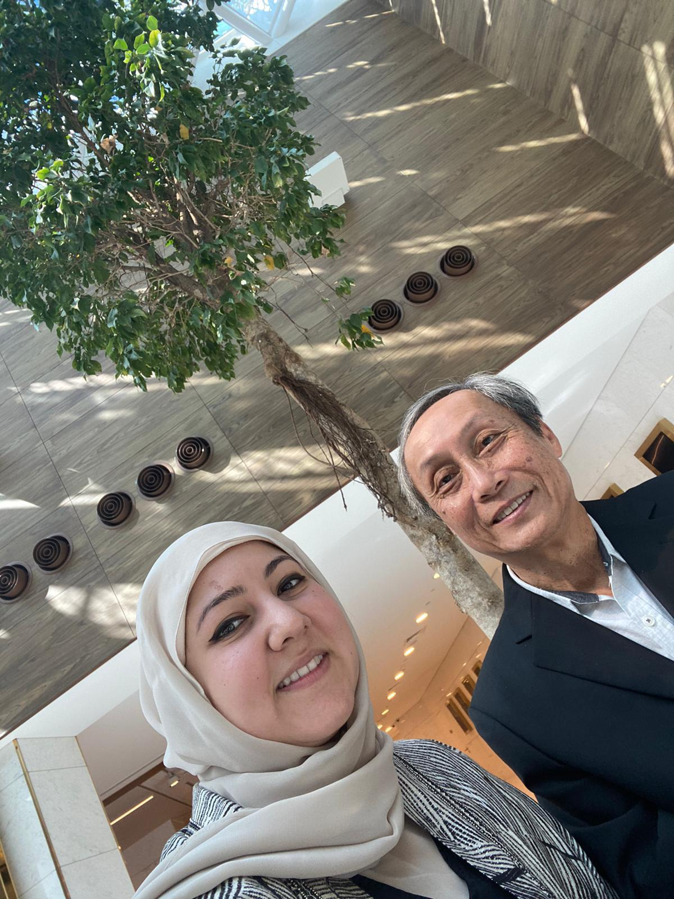
I organized three: Metaverse, between imagination and reality (2022); Intelligent computing, with Prof. Kwei-Jay Lin (2023); and designing virtual worlds to build computational thinking in young learners, with Dr. Safia Malallah (2025).
Social and Public Seminars; Academic Schedule; Student Advising and Faculty Support Staff; Library, Lab, Facilities, Budget and Planning.
From 2023 to 2025 I was faculty supervisor of ClickIT, the student club of the Department of Information Science at Kuwait University. I supervised its workshops, seminars and competitions in computing and AI, and its volunteering and outreach with other student groups and national organizations. I handed the club to a new supervisor in 2025.
Academic year 2024 to 2025
A two-day workshop for College of Life Sciences students, building the technical skills they need for academic and research work.
WorkshopWith the ACM Student Chapter at KU and PyData Kuwait
Club members volunteered at CODED's program for empowering girls in technology and entrepreneurship, held at the College of Life Sciences.
VolunteeringWith CODED
Club members supported CODED's initiative that teaches high-school students the basics of programming and modern technologies, held at the College of Life Sciences.
VolunteeringWith CODED
Nineteen teams competed at the College of Life Sciences, with lectures on entrepreneurship concepts alongside the competition.
CompetitionCo-organized with the ACM Student Chapter at KU, a high-school Capstone team and the Sabah Al-Ahmad Center for Giftedness and Creativity (SACGC)
A student-presented workshop on AI tools and their academic uses. More than 50 students from colleges across the university took part.
WorkshopWith Women in Data Science (WiDS) Kuwait at KU and the ACM Student Chapter
Basic programming concepts and hands-on Python, for students across technical and scientific fields.
WorkshopWith the KARS Club and PyData Kuwait
Club members volunteered at this workshop on scientific publishing for researchers, held at Kuwait University. They ran registration, guided participants to the halls and helped the session run smoothly.
VolunteeringFor the Kuwait Foundation for the Advancement of Sciences (KFAS)
Students staffed an information booth for three days at the exhibition that accompanied a major conference. They explained the Data Science and AI major, the field's future and its job opportunities.
OutreachRepresenting the Department of Information Science
A workshop on building healthy, balanced relationships across the three circles of a person's life (self, mind and body), and on coping with the challenges of daily life.
WorkshopWith a guest speaker
An interactive booth at the Nutrivia club's Diabetes Day, on the link between diabetes and technology, with giveaways to show solidarity with patients and raise awareness.
OutreachWith the Nutrivia club
A programming competition with problems of varied difficulty. Three Department of Information Science faculty members who specialize in programming judged the solutions.
CompetitionOrganized by the club
SeminarWith a guest speaker
2023 to 2024
ExpoCollege of Life Sciences
CompetitionCollege of Life Sciences
WorkshopCollege of Life Sciences
WorkshopCollege of Life Sciences
CompetitionCollege of Engineering and Petroleum
WorkshopWith Project Code
2022 to 2023
ExpoCollege of Life Sciences
Worked with
Follow the club on Instagram (@isc_club) and on LinkedIn (ClickIT Club).
Courses I have taught at Kuwait University.
I welcome collaboration on wearable AI, medical AI and IoT for sustainable cities.